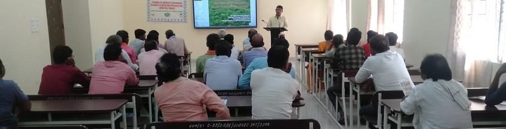
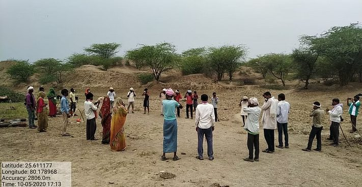
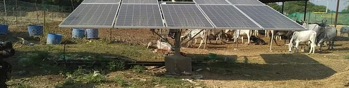
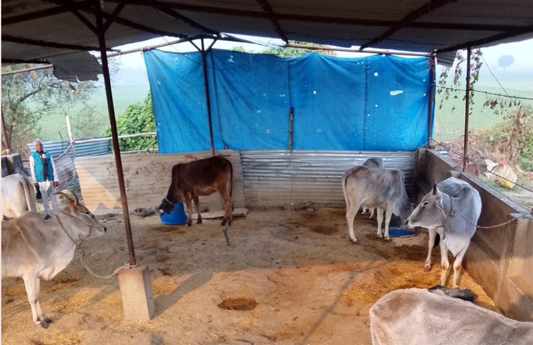
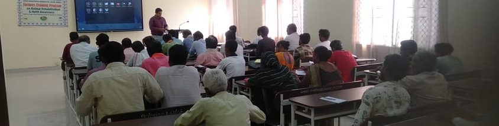

Home / Photo Gallery
Photo Gallery
Photographs from actual SMNTGVSS programme activities in Banda district, Uttar Pradesh.










Photographs from actual SMNTGVSS programme activities in Banda district, Uttar Pradesh.





12A, 80G and CSR-1 registered. Talk to us about CSR projects, government scheme implementation or volunteering.